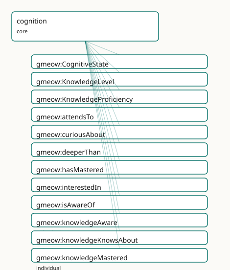

GMEOW Cognition Module
- IRI: https://blackcatinformatics.ca/gmeow/slices/cognition
- Tier: core
Group: core
What This Slice Covers
This slice owns 24 terms and contributes 1 mapping or projection rows. Use it when its terms match the native fact you want to preserve; use the linkage tables to see how those facts leave GMEOW for consumer vocabularies.
Dependencies
Consumers
- The transpiler's expertise up-projection: schema:knowsAbout lifts to the asserted
gmeow:knowsAboutlevel of the knowledge spectrum, preserving the QID-anchored subject (the agent-memory flagship records what an agent knows across sessions — Principle 14). The reified tier —gmeow:KnowledgeProficiency(a gufo:Relator mirroringSkillProficiency) over thegmeow:KnowledgeLevelordinal axis, grounded in thegmeow:CognitiveStatemode under the kernelgmeow:MentalMomentumbrella — lets the flagship record graded, scaled, time-scoped, standpoint-indexed knowing; attention, interest, and objectual memory-of round it out. Belief/justification epistemics land in the sibling epistemics slice.
Local Map

Examples
Attention Interest Memory
- Source:
slices/core/cognition/examples/attention-interest-memory.ttl - GMEOW terms:
gmeow:MemoryItem,gmeow:Person,gmeow:attendsTo,gmeow:curiousAbout,gmeow:displayable,gmeow:interestedIn,gmeow:isAwareOf,gmeow:memoryKind,gmeow:memoryKindEpisodic,gmeow:memoryOf - External prefixes:
wd
# SPDX-FileCopyrightText: 2026 Blackcat Informatics® Inc. <paudley@blackcatinformatics.ca>
# SPDX-License-Identifier: CC-BY-4.0
#
# Worked example (the further objectual cognitive relations. An agent
# records not only WHAT it knows but what it ATTENDS to, is CURIOUS about, and
# REMEMBERS about a subject — the salience/recall surface for the agent-memory
# flagship (Principle 15). These are attentional/affective pulls, NOT goals: the
# boundary to teleology:Desire is documented, never bridged (Principle 9).
# Forgetting is suppression (gmeow:displayable false), never deletion (Principle 10).
@prefix gmeow: <https://blackcatinformatics.ca/gmeow/> .
@prefix ex: <https://blackcatinformatics.ca/gmeow/examples/cognition/> .
@prefix wd: <http://www.wikidata.org/entity/> .
ex:nova a gmeow:Person ;
gmeow:name "Nova"@en ;
gmeow:attendsTo wd:Q11660 ; # artificial intelligence — currently in focus
gmeow:interestedIn wd:Q395 ; # mathematics — sustained interest
gmeow:curiousAbout wd:Q217413 ; # category theory (curiousAbout ⊑ interestedIn)
gmeow:remembers wd:Q192995 . # quantum computing — a subject she remembers (remembers ⊑ isAwareOf)
# curiousAbout entails interestedIn (subproperty); remembers entails isAwareOf —
# a reasoner derives ex:nova gmeow:isAwareOf wd:Q192995 from the remembers edge.
# --- Suppression, not deletion (Principle 10): forgetting, via the documented
# remembers ↔ gmeow:MemoryItem bridge . Nova's remembering of a subject is
# BACKED by MemoryItem(s) about it; a faded memory is the MemoryItem marked
# gmeow:displayable false — retained for "what she remembered WHEN", never erased.
# The bridge is prose, so cognition adds no dependency on the ai slice (Principle 9).
ex:novaWorkshopMemory a gmeow:MemoryItem ; # propositional backing of a now-faded remembering of wd:Q189436 (bioinformatics)
gmeow:memoryOf ex:nova ;
gmeow:memoryKind gmeow:memoryKindEpisodic ;
gmeow:displayable false . # forgotten — withheld, not deleted
Dunning Kruger
- Source:
slices/core/cognition/examples/dunning-kruger.ttl - GMEOW terms:
gmeow:KnowledgeLevel,gmeow:KnowledgeProficiency,gmeow:Person,gmeow:accordingTo,gmeow:deeperThan,gmeow:knowledgeKnowsAbout,gmeow:knowledgeMastered,gmeow:knowledgeProficiencyAgent,gmeow:knowledgeProficiencyLevel,gmeow:knowledgeProficiencyScale - External prefixes:
wd
# SPDX-FileCopyrightText: 2026 Blackcat Informatics® Inc. <paudley@blackcatinformatics.ca>
# SPDX-License-Identifier: CC-BY-4.0
#
# Worked example: the Dunning–Kruger case, modelled as COEXISTING standpoint-indexed
# claims (Principle 9), never a global verdict. Sam self-assesses MASTERY of
# quantum computing; an external assessor rates the same knowledge merely as KNOWS-ABOUT.
# Two gmeow:KnowledgeProficiency relators over the same (agent, subject), at
# divergent gmeow:KnowledgeLevel values, each indexed by gmeow:accordingTo to a
# different vantage. GMEOW records the disagreement; it does not adjudicate it.
@prefix gmeow: <https://blackcatinformatics.ca/gmeow/> .
@prefix ex: <https://blackcatinformatics.ca/gmeow/examples/cognition/> .
@prefix wd: <http://www.wikidata.org/entity/> .
ex:sam a gmeow:Person ; gmeow:name "Sam"@en .
ex:assessor a gmeow:Person ; gmeow:name "External Assessor"@en .
# --- Self-attributed: Sam, by Sam's own lights, has MASTERED quantum computing.
ex:samQuantumSelf a gmeow:KnowledgeProficiency ;
gmeow:knowledgeProficiencyAgent ex:sam ;
gmeow:knowledgeProficiencySubject wd:Q192995 ; # quantum computing
gmeow:knowledgeProficiencyLevel gmeow:knowledgeMastered ;
gmeow:knowledgeProficiencyScale gmeow:scaleKnowledgeDepth ;
gmeow:accordingTo ex:sam . # self-attributed vantage
# --- Observer-attributed: the assessor, on the same scale, rates the SAME knowing
# of the SAME subject only as KNOWS-ABOUT. Lower depth, coexisting claim.
ex:samQuantumAssessed a gmeow:KnowledgeProficiency ;
gmeow:knowledgeProficiencyAgent ex:sam ;
gmeow:knowledgeProficiencySubject wd:Q192995 ; # quantum computing
gmeow:knowledgeProficiencyLevel gmeow:knowledgeKnowsAbout ;
gmeow:knowledgeProficiencyScale gmeow:scaleKnowledgeDepth ;
gmeow:accordingTo ex:assessor . # observer-attributed vantage
# Both relators stand. gmeow:knowledgeMastered gmeow:deeperThan gmeow:knowledgeKnowsAbout
# (transitively, on the LEVELS) quantifies the gap — but the relators themselves are
# never ordered by gmeow:deeperThan, and neither claim is promoted to a fact: the
# divergence is the data (Principle 9).
Knowledge Proficiency
- Source:
slices/core/cognition/examples/knowledge-proficiency.ttl - GMEOW terms:
gmeow:CognitiveState,gmeow:Instant,gmeow:KnowledgeProficiency,gmeow:Person,gmeow:TimeInterval,gmeow:displayable,gmeow:hasEndInstant,gmeow:hasMastered,gmeow:hasStartInstant,gmeow:hasTemporalFrame - External prefixes:
wd,xsd
# SPDX-FileCopyrightText: 2026 Blackcat Informatics® Inc. <paudley@blackcatinformatics.ca>
# SPDX-License-Identifier: CC-BY-4.0
#
# Worked example: the reified knowledge tier. The flat spectrum (gmeow:hasMastered
# &c.) says HOW DEEP; the reified gmeow:KnowledgeProficiency adds the SCALE it is
# read against, a temporal interval, and a standpoint — the promotion path when
# level, scale, time, or vantage matters (Principle 4). Suppression, not deletion:
# lapsed knowledge is a CLOSED interval with gmeow:displayable false, never removed
# (Principle 10). The mode (gmeow:CognitiveState) and the relator
# (gmeow:KnowledgeProficiency) are DIFFERENT individuals — never double-typed.
@prefix gmeow: <https://blackcatinformatics.ca/gmeow/> .
@prefix ex: <https://blackcatinformatics.ca/gmeow/examples/cognition/> .
@prefix wd: <http://www.wikidata.org/entity/> .
@prefix xsd: <http://www.w3.org/2001/XMLSchema#> .
ex:ada a gmeow:Person ;
gmeow:name "Ada"@en ;
gmeow:hasMastered wd:Q28865 . # Python — the flat 80% surface
# --- Promote to a reified proficiency: depth read on an explicit named SCALE,
# over a temporal interval. The flat hasMastered above and this relator
# coexist; gmeow:pairsWith links the two forms.
ex:adaPython a gmeow:KnowledgeProficiency ;
gmeow:knowledgeProficiencyAgent ex:ada ;
gmeow:knowledgeProficiencySubject wd:Q28865 ; # Python
gmeow:knowledgeProficiencyLevel gmeow:knowledgeMastered ;
gmeow:knowledgeProficiencyScale gmeow:scaleKnowledgeDepth ;
gmeow:knowledgeProficiencyInterval ex:adaPythonSince ;
gmeow:displayable true .
# The grounding mode is a SEPARATE individual (a gmeow:CognitiveState), never the
# same node as the relator — founded-on is documentation, not a type (Principle 12).
ex:adaPythonKnowing a gmeow:CognitiveState .
ex:adaPythonSince a gmeow:TimeInterval ;
gmeow:hasStartInstant ex:y2018 ;
gmeow:hasTemporalFrame gmeow:temporalFrameUTCGregorian .
# --- Suppression, not deletion (Principle 10): Ada once understood a framework she
# has since let lapse. The proficiency is RETAINED with a CLOSED interval and
# gmeow:displayable false — what she knew WHEN stays a query, not an erasure.
ex:adaBioinf a gmeow:KnowledgeProficiency ;
gmeow:knowledgeProficiencyAgent ex:ada ;
gmeow:knowledgeProficiencySubject wd:Q189436 ; # bioinformatics
gmeow:knowledgeProficiencyLevel gmeow:knowledgeUnderstands ;
gmeow:knowledgeProficiencyScale gmeow:scaleKnowledgeDepth ;
gmeow:knowledgeProficiencyInterval ex:adaBioinfPast ;
gmeow:displayable false . # lapsed — withheld, not deleted
ex:adaBioinfPast a gmeow:TimeInterval ;
gmeow:hasStartInstant ex:y2014 ;
gmeow:hasEndInstant ex:y2018 ;
gmeow:hasTemporalFrame gmeow:temporalFrameUTCGregorian .
ex:y2014 a gmeow:Instant ; gmeow:instantValue "2014-01-01T00:00:00Z"^^xsd:dateTime ;
gmeow:inTemporalFrame gmeow:temporalFrameUTCGregorian .
ex:y2018 a gmeow:Instant ; gmeow:instantValue "2018-01-01T00:00:00Z"^^xsd:dateTime ;
gmeow:inTemporalFrame gmeow:temporalFrameUTCGregorian .
Knowledge Spectrum
- Source:
slices/core/cognition/examples/knowledge-spectrum.ttl - GMEOW terms:
gmeow:Person,gmeow:hasMastered,gmeow:isAwareOf,gmeow:knowsAbout,gmeow:understands - External prefixes:
wd
# SPDX-FileCopyrightText: 2026 Blackcat Informatics® Inc. <paudley@blackcatinformatics.ca>
# SPDX-License-Identifier: CC-BY-4.0
#
# Worked example: the knowledge spectrum. An agent's epistemic depth toward a
# subject is one of four ordinal levels chained by rdfs:subPropertyOf, so the
# deepest assertion entails every shallower one. Here one agent has MASTERED
# Python (so a reasoner also derives understands / knowsAbout / isAwareOf of it),
# UNDERSTANDS category theory, KNOWS ABOUT bioinformatics, and IS only AWARE OF
# quantum computing. Subjects are wikidata QID entities — the curated bridge.
@prefix gmeow: <https://blackcatinformatics.ca/gmeow/> .
@prefix ex: <https://blackcatinformatics.ca/gmeow/examples/cognition/> .
@prefix wd: <http://www.wikidata.org/entity/> .
ex:ada a gmeow:Person ;
gmeow:hasMastered wd:Q28865 ; # Python — entails understands ⊑ knowsAbout ⊑ isAwareOf
gmeow:understands wd:Q217413 ; # category theory
gmeow:knowsAbout wd:Q189436 ; # bioinformatics
gmeow:isAwareOf wd:Q192995 . # quantum computing — bare awareness only
# The subjects are first-class entities identified by their wikidata QID; the
# spectrum says nothing about them beyond that ex:ada stands toward each at the
# stated depth. A reasoner materialises, e.g., ex:ada gmeow:knowsAbout wd:Q28865
# from the hasMastered assertion via the subproperty chain.
Terms
Classes
| Term | Label | Definition |
|---|---|---|
gmeow:CognitiveState |
Cognitive State | An agent's intrinsic knowing mode toward a subject — the mental moment grounding the knowledge spectrum and the reified gmeow:KnowledgeProficiency. The agent-s... |
gmeow:KnowledgeLevel |
Knowledge Level | The graded epistemic depth of a knowledge-proficiency — an OPEN, ordered value vocabulary (knowledgeAware ≺ knowledgeKnowsAbout ≺ knowledgeUnderstands ≺ knowle... |
gmeow:KnowledgeProficiency |
Knowledge Proficiency | A reified, leveled depth-of-knowledge of an agent toward a subject — the gufo:Relator binding {agent} × {subject} × {level on a scale} × {interval}, mirroring... |
Properties
| Term | Label | Definition |
|---|---|---|
gmeow:attendsTo |
attends to | Directed attention or salience of an agent toward a subject — what the agent is currently focused on. NOT a goal: an attentional pull, not a teleology:Desire ... |
gmeow:curiousAbout |
curious about | An exploratory, knowledge-seeking orientation toward a subject — interest aimed at closing a knowledge gap. A specialization of gmeow:interestedIn (curiosity i... |
gmeow:deeperThan |
deeper than | Orders the knowledge-depth axis: relates a knowledge level to a shallower one it surpasses (knowledgeMastered gmeow:deeperThan knowledgeUnderstands). Transitiv... |
gmeow:hasMastered |
has mastered | Deepest level of the knowledge spectrum: the agent has expert command of the subject and can extend, teach or innovate on it. Entails gmeow:understands (and tr... |
gmeow:interestedIn |
interested in | A motivational orientation of an agent toward a subject — sustained interest that makes the subject worth attending to. An attentional/affective pull, NOT a te... |
gmeow:isAwareOf |
is aware of | Faintest level of the knowledge spectrum: the agent has encountered the subject and knows it exists, without necessarily knowing facts about it. Entailed by ev... |
gmeow:knowledgeProficiencyAgent |
knowledge proficiency agent | The agent whose depth of knowledge a knowledge-proficiency expresses. Functional — constitutive of the proficiency. |
gmeow:knowledgeProficiencyInterval |
knowledge proficiency interval | The interval over which a knowledge-proficiency held; closing it (rather than deleting) records lapsed knowledge (Principle 10). Non-functional. Lighter cases... |
gmeow:knowledgeProficiencyLevel |
knowledge proficiency level | The attained ordinal depth of a knowledge-proficiency (a gmeow:KnowledgeLevel: knowledgeAware ≺ knowledgeKnowsAbout ≺ knowledgeUnderstands ≺ knowledgeMastered)... |
gmeow:knowledgeProficiencyScale |
knowledge proficiency scale | The framework a knowledge-proficiency level is measured on (the native gmeow:KnowledgeLevel scale, or Bloom's revised / SOLO / Dreyfus as alternates) — a gmeow... |
gmeow:knowledgeProficiencySubject |
knowledge proficiency subject | The subject a knowledge-proficiency concerns (open range gmeow:Entity: a topic, person, place, or event). Functional — constitutive. |
gmeow:knowsAbout |
knows about | Second level of the knowledge spectrum: the agent knows facts about the subject and can describe it — familiarity, not yet working comprehension. The exactMatc... |
gmeow:remembers |
remembers | Objectual memory-of: an agent remembers a SUBJECT (a person, place, topic, or event it has encountered). Sub-property of gmeow:isAwareOf — remembering a subjec... |
gmeow:understands |
understands | Third level of the knowledge spectrum: the agent comprehends the subject and can reason with and apply it, beyond reciting facts. Entails gmeow:knowsAbout (and... |
Individuals
| Term | Label | Definition |
|---|---|---|
gmeow:knowledgeAware |
knowledge: aware | Faintest depth: bare awareness — knows the subject exists. Pairs with the gmeow:isAwareOf spectrum level. |
gmeow:knowledgeKnowsAbout |
knowledge: knows about | Familiarity — knows facts about the subject and can describe it. Pairs with the gmeow:knowsAbout spectrum level. |
gmeow:knowledgeMastered |
knowledge: mastered | Deepest depth: expert command — can extend, teach, or innovate on the subject. Pairs with the gmeow:hasMastered spectrum level. |
gmeow:knowledgeUnderstands |
knowledge: understands | Working comprehension — can reason with and apply the subject. Pairs with the gmeow:understands spectrum level. |
gmeow:scaleBloomRevised |
Bloom's revised taxonomy | An alternate knowledge-depth framework — Anderson & Krathwohl's revised Bloom's taxonomy (remember ≺ understand ≺ apply ≺ analyze ≺ evaluate ≺ create). Reused... |
gmeow:scaleKnowledgeDepth |
knowledge depth | The native knowledge-depth scale: the framework on which the four ordinal gmeow:KnowledgeLevel values (knowledgeAware ≺ knowledgeKnowsAbout ≺ knowledgeUndersta... |
gmeow:scaleSOLO |
SOLO taxonomy | An alternate knowledge-depth framework — Biggs & Collis's Structure of Observed Learning Outcomes (prestructural ≺ unistructural ≺ multistructural ≺ relational... |
Linkages
- Rows: 1
- Projection profiles: -
- External vocabularies:
schema
| Source | Kind | Profile | Predicate/Relation | Target | Evidence |
|---|---|---|---|---|---|
gmeow:knowsAbout |
equivalence | - |
skos:exactMatch | schema:knowsAbout | gmeow-cognition.sssom.tsv; gmeow:eqCognition001; confidence 0.95 |
Guide
cognition
Slice:
https://blackcatinformatics.ca/gmeow/slices/cognition· tier: core
An agent's cognitive relations to a subject — how an agent stands toward the
things it knows, attends to, and grasps. The objectual companion to the
standpoint slice (which carries propositional attitudes toward claims):
cognition relates an agent to an entity, not to a proposition. This minimal
core seeds the slice with a single axis — the knowledge spectrum. Belief,
justification, and knowledge-that are the sibling epistemics slice's job, not
this one.
The knowledge spectrum
Four ordinal levels of an agent's epistemic depth toward a subject, chained
by rdfs:subPropertyOf so that each deeper level entails every shallower one:
| Depth | Property | Sense |
|---|---|---|
| 1 · faintest | gmeow:isAwareOf |
has encountered it; knows it exists |
| 2 | gmeow:knowsAbout |
knows facts about it; can describe it |
| 3 | gmeow:understands |
comprehends it; can reason with and apply it |
| 4 · deepest | gmeow:hasMastered |
expert command; can extend, teach, innovate on it |
hasMastered ⊑ understands ⊑ knowsAbout ⊑ isAwareOf
Why a subproperty chain (the reasoning value)
One deep assertion materialises the whole tail. hasMastered(p, wd:Q28865)
entails understands, knowsAbout, and isAwareOf of the same subject — so a
query "who is even aware of Python?" returns the dabbler and the master alike,
and "who understands it?" returns the masters too. The order is what reasoning
needs; the level boundaries are deliberately vague and no crisp cutoff is
claimed. The chain encodes the ordering, not a partition.
Comprehension is not competency
The spectrum is the knows axis. gmeow:hasSkill (the expertise slice) is
the can-do axis. A skill entails knowing about its subject
(gmeow:hasSkill ⊑ gmeow:knowsAbout, asserted by expertise), but neither
understanding nor mastery of it — the axes stay orthogonal and are never
silently bridged (Principle 9).
Standpoint indexing
Whose knowledge it is, and how deep, is a vantage-indexed claim through the statement layer (Principle 9). Knowledge attributed to an agent by an observer and knowledge avowed by the agent coexist; a contested depth is two coexisting claims, never a global verdict.
The mental-moment family
gmeow:CognitiveState — the agent-side knowing mode — sits under the kernel's
gmeow:MentalMoment umbrella (gmeow:MentalMoment ⊑ gufo:IntrinsicMode). That
umbrella gathers an agent's whole mental life under one queryable parent:
gmeow:MentalMoment (kernel · gufo:Category ⊑ gufo:IntrinsicMode)
├── gmeow:CognitiveState (cognition · knowing)
├── doxastic states (epistemics · believing — planned)
└── gmeow:IntentionalMode (teleology · desiring/intending)
A consumer (the agent-memory flagship, Principle 15) can ask for every mental moment of an agent at once, rather than walking three unrelated branches.
The reified tier — KnowledgeProficiency
The flat spectrum is the 80% surface; promote to the reified
gmeow:KnowledgeProficiency (a gufo:Relator, mirroring expertise's
SkillProficiency) when level, scale, temporal scope, or standpoint
matters (Principle 4). It binds {agent} × {subject} × {level} × {scale} × {interval}
through five roles (knowledgeProficiencyAgent / …Subject / …Level / …Scale
/ …Interval).
- Mode vs relator, never double-typed. A
gmeow:CognitiveState(the knowing mode) and agmeow:KnowledgeProficiency(the reified relator) for the same knowing relation are different individuals. "Founded on" is documentation, not an axiom (Principle 12). - The depth axis.
gmeow:KnowledgeLevelis an open, ordered value vocabulary (knowledgeAware≺knowledgeKnowsAbout≺knowledgeUnderstands≺knowledgeMastered), the kernelGranularityLevelidiom.gmeow:deeperThanis transitive on levels only —KnowledgeProficiencyrelators are never ordered by it. gmeow:pairsWithwires each flat spectrum property to the relator sogmeow describecan render the flat-first / reify-on-demand pairing.- Suppression, not deletion (Principle 10). Lapsed knowledge is a closed
knowledgeProficiencyIntervaland/orgmeow:displayablefalse — retained, never deleted: what an agent knew when stays a query.
Attention, interest, and objectual memory
Beyond what it knows, an agent records what it attends to, is curious about, and remembers about a subject — the salience/recall surface for the flagship:
| Relation | Sense |
|---|---|
gmeow:attendsTo |
directed attention / salience toward a subject |
gmeow:interestedIn |
sustained motivational orientation |
gmeow:curiousAbout ⊑ interestedIn |
knowledge-seeking interest |
gmeow:remembers ⊑ isAwareOf |
objectual memory-of a subject |
Boundaries, documented but never bridged by axiom (Principle 9):
attention/interest is an attentional pull, not a teleology goal; objectual
gmeow:remembers (a remembered subject) is distinct from the propositional
gmeow:MemoryItem (a remembered claim, the ai slice) — the link rides
gmeow:memoryOf as prose, so cognition adds no dependency on ai. Forgetting
is suppression (gmeow:displayable false), never deletion (Principle 10).
Terms
The four ordinal properties of the knowledge spectrum, chained so each deeper
level entails every shallower one ([hasMastered](../reference/properties/gmeow-hasMastered.md) ⊑ understands ⊑ [knowsAbout](../reference/properties/gmeow-knowsAbout.md) ⊑
[isAwareOf](../reference/properties/gmeow-isAwareOf.md)).
gmeow:isAwareOf
The faintest depth: the agent has encountered the subject and knows it exists. The
honest floor a flat schema:knowsAbout edge lifts no further than.
gmeow:knowsAbout
Knows facts about the subject; can describe it. The eponymous bridge to
schema:knowsAbout (skos:exactMatch), and the level a gmeow:hasSkill entails
(asserted by the expertise slice).
gmeow:understands
Comprehends the subject; can reason with and apply it — deeper than knowing facts about it, shallower than mastery.
gmeow:hasMastered
The deepest level: expert command — can extend, teach, and innovate on the subject. Asserting it materialises the whole shallower tail.
Alignment
schema:knowsAbout aligns by skos:exactMatch to gmeow:knowsAbout — the
eponymous level is the bridge. A flat schema:knowsAbout edge lifts to the
asserted gmeow:knowsAbout level (its honest floor: you cannot infer mastery
from a flat edge). Going down, all four levels collapse to the single
schema:knowsAbout the wider world offers — a lossy projection of the spectrum.
The alignment ledger — alternate depth frameworks
The native gmeow:scaleKnowledgeDepth is the default scale; Bloom's revised
taxonomy (gmeow:scaleBloomRevised), SOLO (gmeow:scaleSOLO), and Dreyfus
(gmeow:scaleDreyfus, from languages) are reusable alternate
gmeow:ProficiencyScales — no canonical framework is enforced (Principle 6).
The band correspondence below is a soft, documented alignment (this ledger), never
an OWL axiom; the knows-axis and the can-do-axis are never silently bridged (P9):
gmeow:KnowledgeLevel |
Bloom's revised | SOLO | Dreyfus (knows-side reading) |
|---|---|---|---|
knowledgeAware |
Remember | unistructural | novice |
knowledgeKnowsAbout |
Understand | multistructural | advanced beginner |
knowledgeUnderstands |
Apply / Analyze | relational | competent / proficient |
knowledgeMastered |
Evaluate / Create | extended abstract | expert |
A gmeow:KnowledgeProficiency records its level on whichever scale it cites; the
correspondence above is for cross-framework reading, not automatic conversion (that
is solver-side, Principle 12).
See also
expertise— the applied-competency axis (hasSkill,SkillProficiency, occupations, credentials);hasSkill⊑knowsAboutbridges the two. Thegmeow:ProficiencyScale/gmeow:ProficiencyLevelvalue vocab it once held now lives inkernel(relocated by to break a dependency cycle).kernel—gmeow:MentalMoment(the shared mental-state umbrella) and the relocated proficiency value vocab.teleology—gmeow:IntentionalMode(desiring/intending), the conative member of the mental-moment family.standpoint— propositional attitudes toward claims.ai—gmeow:MemoryItem, the propositional remembered-claim constructgmeow:remembersis documented (not axiomatised) to bridge to.epistemics(planned) — belief, justification, knowledge-that.